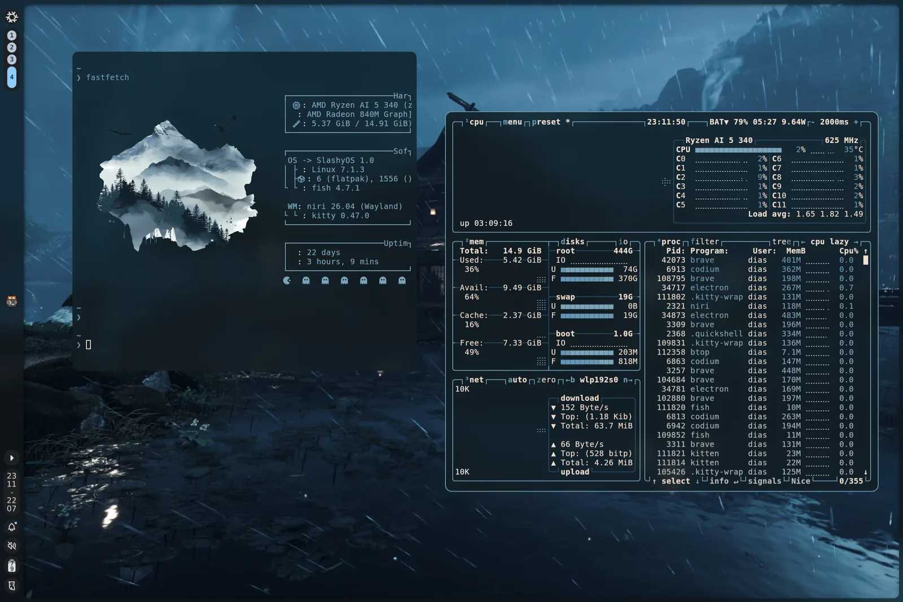

$ cat slashyos.md
SlashyOS/
nix · linux
Omdat alles in één flake staat, is de config van beide machines altijd hetzelfde en makkelijk terug te vinden in git.
Elke rebuild maakt een nieuwe generatie, dus als er iets stuk gaat kan ik gewoon terug naar de vorige.

$ ls ./features
- multihost — laptop en desktop uit dezelfde flake
- modulaire opbouw, per host in of uit te schakelen
- rollbacks via NixOS-generaties